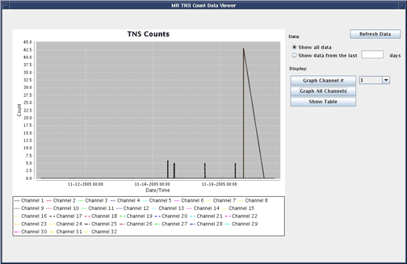
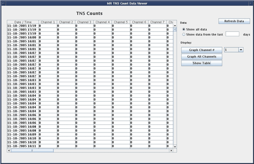
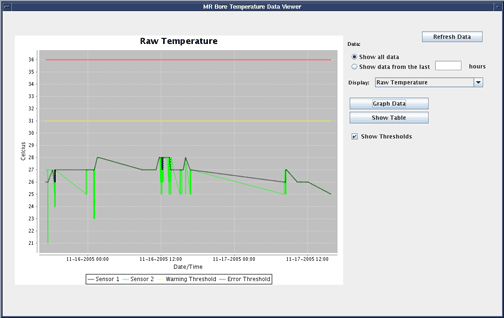
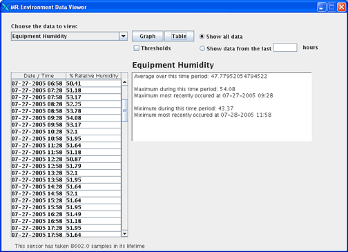

Operating Documentation
Direction 5440001-3, Rev# 6
Signa HDxt Service Methods
Module Version 1.0, Version Date 4/25/07
Operating Documentation |
Coil Log Viewer: This utility provides a means for viewing the bias currents detected on any coil used during clinical scanning. The data is graphed and displayed numerically for each coil by channel and by connector. This utility also conveniently displays the coil open and short circuit limits, voltage configuration, and coil ID. This utility can be useful for remote diagnosis of whether a specific coil is failing or if a connector or receive chain path is failing on the system. This viewer also displays when failures have occurred on any multi-coil channel during clinical scanning
Environmental Data Viewer: This utility displays the temperatures and humidity of the Operator's Console and the Equipment room. It keeps track of the data that is stored at each site once a day. The data is sampled at a 30 minute interval and can be compared against the siting limits through this utility. The utility allows you to graph or view each data point numerically and will provide a maximum, minimum, and mean for the date range selected.
TNS Viewer: This utility displays the TNS counts stored for each channel on the system. It graphs the data for a specific time range or present the data numerically. The utility can be helpful in quickly identifying when any specific notches had occurred remotely since the data is tracked for each scan.
Bore Temp Viewer: This utility graphically and numerically displays the bore temp sensor reported data. It also displays individual pre-filtered data for each of the two sensors for comparison against the reported bore temp sensor. It keeps track and display any instances when either the warning or the trip levels have been reached by the bore temperature sensor reading. This utility can be effective in identifying when any failures have occurred and correlating those to the specific scans or sequences that caused the increase in temperature.
To access the Log Viewers click the Utilities tab in the CSD. Select the desired viewer on the left.
Illustration 1:

Clicking Refresh Data clears all the parameters that have been entered.
Clicking Graph Channel # charts the TNS Counts for the selected channel on a graph.
Clicking Graph All Channels charts the TNS Counts for all channel on a graph.
Clicking Show Table shows the requested information in a table (for an example of a table view see Illustration 2).
Illustration 2: Table View

Temperature and Environmental Log Viewers functionality is the same as the TNS viewer except where noted below.
Illustration 3: Temperature Viewer Options and Graphical Display

Temperature Display Options
Raw Temperature *
Reported Temperature *
Raw and Reported Temperature *
Ref Counts
Level
Environmental Display Options
GOC Temperature *
GOC Humidity *
Equipment Temperature *
Equipment Humidity *
| NOTE: | * Selecting the Show Threshold option for these three displays will graph the Warning level (yellow) and the Error level (red) along with the data. |
Illustration 4: Environmental Viewer Options and Table Display
